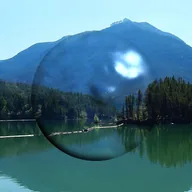

Omino Glass

Glas gemaakt van de helderheid van de laag: breekt wat erachter ligt met regenboogranden en belicht het oppervlak als een lens.
Instellingen
| Instelling | Type | Bereik | Standaard |
|---|---|---|---|
| Schuine kant | Getal | 0 px tot 300 px | 10 px |
| Breking | Getal | -100 px tot 100 px | 5 px |
| Chromatische aberratie | Getal | -100 px tot 100 px | 5 px |
| Detailgrootte | Getal | 5 tot 500 | 100 |
| Samples gladheid | Getal | 1 tot 20 | 2 |
| Kleur | Kleur | – | #FF5566 |
| Mengen | Getal | 0% tot 100% | 0% |
| Schaduwwerking | Keuze | Geen, Puntlicht, Gericht licht | Puntlicht |
| Intensiteit | Getal | 0% tot 200% | 100% |
| Glans | Getal | 0 tot 1 | 0.8 |
| Spiegelglans | Getal | 1 tot 250 | 30 |
| Omgevingslicht | Getal | 0 tot 1 | 0.1 |
| Lichtkleur | Kleur | – | #FFFFFF |
| Richting | Punt (X, Y) | -5000 px tot 5000 px | 75 px, -75 px |
| Elevatie | Getal | -100 tot 800 | 100 |
| Luminantie van laag gebruiken | Aan of uit | – | Aan |
| Ruwheid | Getal | -100% tot 100% | 0% |
| Schaal ruwheid | Getal | 0.01 tot 50 | 1 |
| Evolutie | Getal | -50 tot 50 | 0 |
| Seed | Getal | 0 tot 5 | 0 |